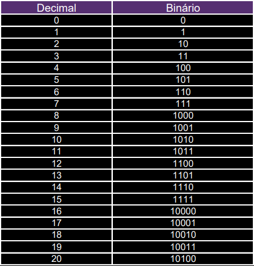
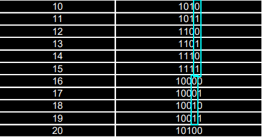
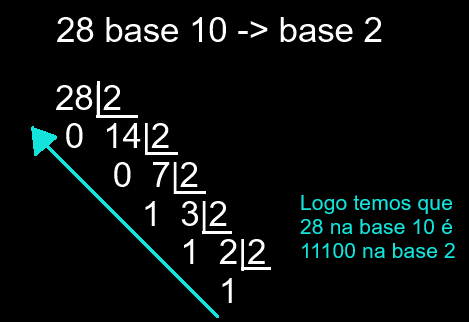
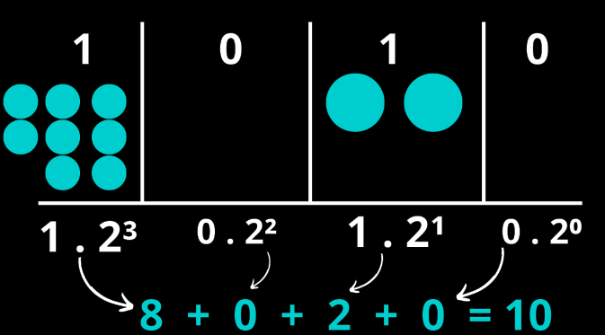
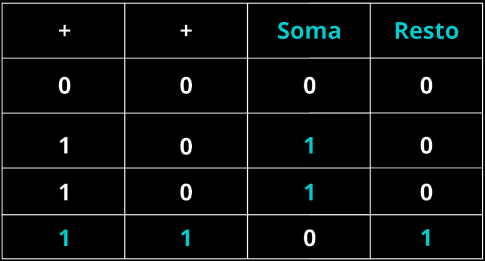
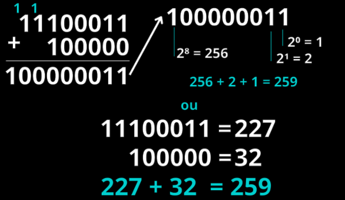
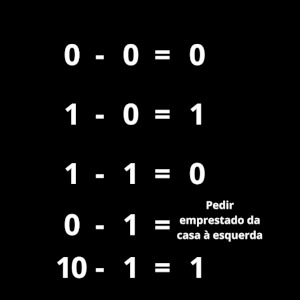
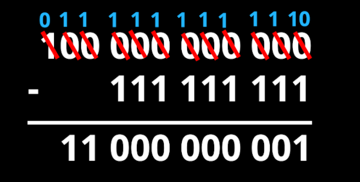
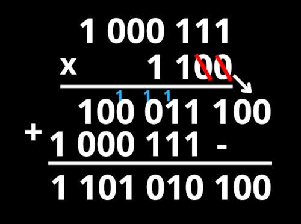
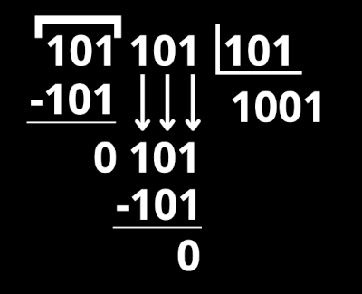

Os Binários
O que é o sistema de numeração Binário?
O sistema de numeração binário é uma das muitas formas de representar um número. Nosso sistema, o decimal, utliza 10 símbolos, sendo eles {0, 1, 2, 3, 4, 5, 6, 7, 8 e 9}; Já os binários utlizam apenas 2! Os famosos {0 e 1} que vemos em filmes ou séries sobre tecnologia. Por ele conter apenas 2 símbolos muitas vezes suas representações podem ficar enormes, mas não fique com medo! Os binários são bem mais fáceis do que parecem.
Progressão de números binários
Os binários progridem seguindo uma ordem, igual aos decimais. Cada sequencia segue uma regra, se um dígito for 1, ele vira zero e adiciona-se mais 1 ao digito à esquerda. É como somar 9+1, deixamos o 0 na unidade e passamos o 1 pra dezena, porém, no sistema binário temos que fazer isso em todos os números.


Perceba também nas marcações da segunda tabela que comprova que essa regra se aplica a todos os números.
Procurando pela internet eu também achei esses dois vídeos que exmplificam um pouco mais visualmente o que eu quis explicar com o primeiro texto.
Conversão de Decimal para Binário
Assim como em todos os outros sistemas de numeração que veremos, a conversão será feita por meio de divisões consecutivas pelo número base do sistema, no caso o 2. A divisão funciona da seguinte forma:
- Pegamos o número em decimal e o dividimos por 2
- Guardamos o seu resto
- Repetimos até que o quociente seja menor ou igual a 2
- Pegamos o último quociente e todos os restos, da diteita para a esquerda

Conversão Binário para Decimal
Para a conversão de binário para decimal, fazemos a potenciação sempre com a base 2, comecando da direita para esquerda, e multiplicando pelo seu algarismo.
- Analizamos os números
- Fazemos suas potências
- Multiplicamos pelo seu algarismo
- Somamos os resultados

Imagem inspirada no material do professor Alexandro Adário
Operações Básicas com os Binários
Os binarios, não passam de uma versão simplificada do nosso sistema decimal, ou seja, eles também possuem operações que podem ser feitas (Adição, subtração, multiplicação e divisão). Podemos resolvê-las de 2 jeitos: transformando-os em decimais ou entendendo algumas regras do sistema binário.
Adição
As somas são bem faceis, caso seja 1 + 0 ou 0 + 1, apenas descemos o 1. Já quando temos 1 + 1 devemos descer o 0 e colocar o 1 na casa à esquerda. Veja a tabela:

A cada +1 que o número somar, basta olhar a sua sequencia na tabela da progressão dos binários
Veja o exemplo:

Subtração
A subtração de números binários segue a mesma lógica dos decimais. Caso o número que esteja embaixo seja maior que o número de cima pedimos emprestado da casa à esquerda.


Multiplicação
A multiplicação é de longe a conta mais fácil entre essas 2 que vimos e a próxima. A multiplicação segue a mesma lógica dos decimais, multiplicamos o número de cima pelo de baixo e somamos as multiplicações.

Divisão
Na divisão comparamos o número a ser dividido pelo divisor, e dividimos, temos 2 possibilidades: o número ser divisivel que nos da o resultado 1 ou o número não ser divisivel que nos dá resultado 0 e possibilita a descida do próxima casa para a divisão.
